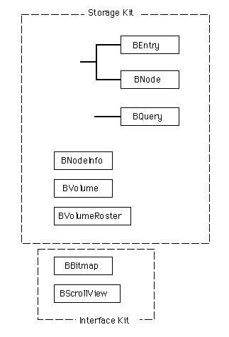
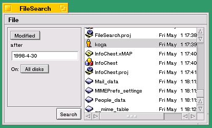
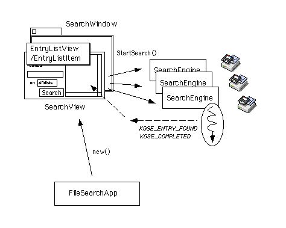
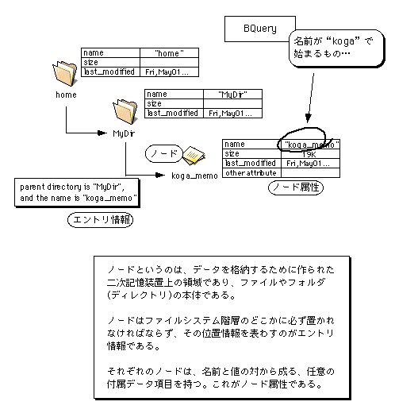
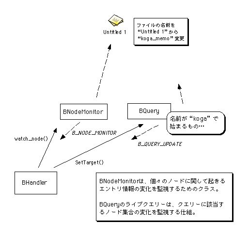
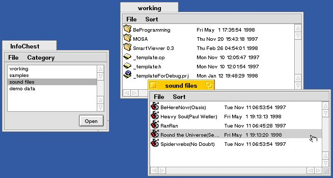
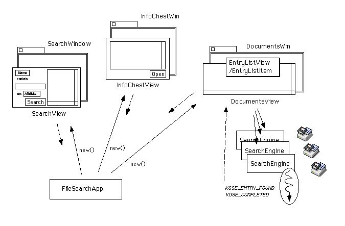

第9章 ファイルを操ろう
この章では、BeOSのファイルシステムが持つ特徴的な機能を利用して、ファイルやフォルダの検索と属性設定を行います。つまり、主な題材として以下のものをとりあげます。
◇指定された条件に合うファイルやフォルダを検索する
◇ファイルやフォルダのアイコンを表示する
◇ファイルやフォルダにキーワードを付けて管理する
また、これに加えて以下の二つの題材を扱います。
◇アプリケーションの初期設定ファイルを作成し、設定データを保存する
◇ファイルやフォルダのドラッグ&ドロップ機能をサポートする
以上の題材をプログラミングするために、BeOSのAPIが提供しているクラスのうち、主に以下のものを利用します。
●BEntry(Storage Kit)
●BNode(Storage Kit)
●BNodeInfo(Storage Kit)
●BQuery(Storage Kit)
●BVolume(Storage Kit)
●BVolumeRoster(Storage Kit)
●BBitmap(Interface Kit)
●BScrollView(Interface Kit)
これらのクラスの間の階層関係を、図9.1に示します。

図[9.1] 第9章で主に扱うクラス間の階層図
プログラミングの説明に使うサンプルアプリケーションは、全部で二つ用意しています。9.1節では、ファイル検索を行うアプリケーションを示します。それから、9.3節ではファイルやフォルダにキーワードを付けて管理するアプリケーションを示します。このアプリケーションには、9.1節のファイル検索アプリケーションの機能を取り込んでおり、簡単なドキュメント管理ツールとして利用することができます。
9.3節で示すサンプルアプリケーションは、これまで説明に使ってきたものに比べると多少大がかりで、この本のサンプルの中で一番大きなものです。それでも、アプリケーションのファイルサイズは約70KBしかなく、BeOS付属の機能限定版CodeWarriorで作成することが可能です(注9-1)。キーワードによるドキュメント管理機能を持った、高度なアプリケーションでもこの程度の小ささで済むのは、BeOSが提供する高機能のファイルシステム(BeFS)のおかげです。BeOSのファイルシステムについては3.4節でも説明しましたので、その内容を忘れてしまった人は、この後の説明へ進む前に、もう一度読み返してみるのもよいでしょう。
- (注)9-1
- BeOS付属のCodeWarriorでは、リンカが生成できる実行ファイルのサイズは最大で64KBまでということになっています。しかし、アプリケーションファイルには実行コード以外にもリソースデータなどの付属データが含まれるため、全体のファイルサイズは64KBよりも大きくなる場合があります。
9.1 ファイルを探す
この節では、BeOSのファイルシステム(BeFS)の機能を利用したファイル検索のプログラミングについて説明します。3.4節で述べたように、BeFSは簡易データベース機能を持っており、とても単純なプログラミングでファイル検索処理を実現できます。説明に使うサンプルアプリケーションのソースコードを読んでみれば、そのことが良く分かるでしょう。9.1.1 BeFSのファイル検索機能
まず、BeFSが提供するファイル検索機能について紹介します。BeFSは、他のOSのファイルシステムと同様に階層構造を持っており、ディレクトリ(フォルダ)とファイルによって階層木を構成します。階層木はディレクトリで枝分かれし、それぞれの枝の末端、つまり葉にあたるのがファイルです。また、階層木の頂点はルートファイルシステム("/")であり、その下にはマウントされたボリュームが繋がります。この様子は、デスクトップの“Disks”アイコンからファイル階層をたどっていくと分かりやすいでしょう。“Disks”の下にはマウントされたボリュームがあり、それぞれのボリュームの下には、その中に保存されているフォルダやファイルの階層があります。BeFSは、ファイルシステムが構成する階層木の枝や葉、つまりフォルダやファイルに対し、強力な検索機構を提供します。この検索において、フォルダとファイルはどちらも階層木の節点(ノード)として平等に扱われるため、それらを区別する必要はありません。すべてのフォルダとファイルは、三つの基本属性、すなわち名前とサイズと最終更新日時を持ち、これをキーとして検索できます。それだけではなく、個々のフォルダやファイルに対して任意の属性を設定し、設定した属性をキーとした検索を行うことができるのです。これは、MacOSやWindows、またUnix系のOSなど従来のOSに比べると、大きな特徴です。
たとえば、MacOSでもファイルに対する検索機能は提供されていますが、検索キーとして使えるのは、名前やサイズや最終更新日時など、あらかじめシステムによって定義された属性だけです。BeOSのように、アプリケーションが独自に定義した属性を検索に利用することはできません。それどころか、ファイルやフォルダに対して任意の属性を定義し、それを設定できる機能自体、従来のOSにはなかったものです。9.3節の説明で使う“InfoChest”というサンプルアプリケーションでは、この機能を利用してファイルやフォルダにカテゴリを示すキーワードを付け、キーワードによる分類管理を行います。これは、「キーワード」という属性を定義して、任意のファイルやフォルダに対してそれを設定できるからこそ実現できたものです。
また、検索条件が文字列で表現されるのもBeFSの特徴です。たとえば、「名前が“koga”で始まるもの」という条件は、“(name=="koga*")”という文字列で表わされます(注9-2)。これをBeFSのファイル検索APIに渡せば、その通りの検索を行ってくれます。検索条件を文字列で表現できるので、ファイルに保存しておいて後で同じ内容の検索を行うのも、簡単にできます。BeFSのファイル検索機能を利用したツールの代表例にTrackerの検索パネルがありますが、実際に、Trackerの検索パネルでは検索に使った条件文をファイルに保存しておくことが可能です。データベースの用語では、検索内容を指定する条件文のことを「問い合わせ文(クエリー)」と呼びますが、BeFSでも検索条件文を指して「クエリー(query)」と呼んでいます。
以下は、BeFSが持つファイル検索機能の特徴をまとめたものです。
・検索は、ファイルやフォルダ、すなわちファイルシステムが構成する階層木の節点(ノード)が持つ属性をキーとして行われる。検索結果として返されるのは、条件に合う属性値を持ったノードの集合である。
・ファイルシステム階層のノードに設定する属性は、あらかじめシステムで定義されたもの以外に任意の属性を追加でき、それを検索キーに利用することが可能。
・検索条件は文字列で表現され、ファイルシステムに対する問い合わせ文(クエリー)として使われる。
ここに挙げたのは、BeFSが提供する基本的な検索機能に過ぎません。この次に説明するStorage KitのAPIでは、これらに加えて「ライブクエリー」という便利な機能が提供されています。また、クエリーを作成するのを簡単にしてくれる機能も用意されていますので、通常のプログラミングではそちらを利用します(注9-3)。
- (注)9-2
- ここで示したのは、大文字と小文字を区別する場合の条件式です。区別しない場合は“(name=="[kK][oO][gG][aA]*")”となります。
- (注)9-3
- BeFSに対する基本的な問い合わせ機能は、Kernel Kitのクエリー操作手続きを通して利用することができます。何らかの事情でC++を利用できないなど、どうしてもC言語のAPIが必要な場合に利用するとよいでしょう。
9.1.2 FileSearchが利用するAPI
ファイル検索のサンプルアプリケーションについて説明する前に、それが利用しているAPIを紹介しておきます。まずは、これまでの章のサンプルでは扱っていなかったStorage Kitのクラスです。このKitは、ファイルやディレクトリなど、ファイルシステム要素を操作するAPIを集めたものです。この節のサンプル(FileSearch)では、主に以下のクラスを利用しています。■BEntry
ファイルシステム階層のノード、すなわちファイルやディレクトリの位置情報を表わしたクラスです。9.2節で説明するように、BNodeクラスと連携させて使います。ノードの削除や位置の移動を行うメソッドを持っており、ファイルやフォルダに格納されたデータにアクセスするのではなく、データの入れ物、つまりファイルやディレクトリ自体を操作する場合に利用するクラスです。
なお、ここでいう「位置」とは、ファイルシステムの階層木における位置を指します。つまり、BEntryクラスが表わす位置情報とはファイルやディレクトリのパス情報であり、それらが所属する親ディレクトリと名前の対がBEntryの実体です(注9-4)。以降の説明では、BEntryクラスが表わすノードの位置情報のことを「エントリ情報」と呼びます。BEntryクラスでは、エントリ情報の受け渡しに使う“entry_ref”という構造体を定義しています。
■BNode
ファイルやディレクトリの実体、すなわちファイルシステム階層のノード本体を表わしたクラスです。ノードが持っているデータ、つまりファイルやディレクトリの内容にアクセスするためのクラスです。このクラスには、BFile, BDirectory, BSymLinkという三つのサブクラスがあり、それぞれファイルとディレクトリ、そしてシンボリックリンクを表わしたものです。言い換えれば、BeFSのノードはこの三種類しかありません。
BeFSでは、ノードに対して任意の属性を設定できるというのは上で述べた通りです。BNodeクラスは、ノード属性にアクセスして値の読み出しや書き込みを行うメソッド、および属性の追加と削除を行うメソッドを持っています。9.3節で説明するサンプルアプリケーション(InfoChest)では、これらのメソッドを使っていますので参考にしてみて下さい。また、BFileクラスやBDirectoryなど、BNodeのサブクラスを使ったプログラミング例は第10章で扱います。
■BNodeInfo
ファイルシステム階層のノードが持つ属性のうち、3.4節で述べたファイルタイプ・データベースに関するものにアクセスする場合に便利なクラスです。このクラスを使わなくても、BNodeクラスだけを使ってそれらの属性にアクセスすることは可能です。しかし、ファイルやフォルダ(ディレクトリ)のアイコンを取得したり、ファイルを開くのに使うアプリケーションを設定したりする時は、このクラスが提供している専用のメソッドを使う方が便利です。
たとえば、この章のサンプルではファイルやフォルダのアイコンデータを取り出すのに、BNodeInfoクラスのGetTrackerIcon()メソッドを使っています。このメソッドはノード属性として保存されているアイコンのビットマップデータを探し、それがない場合には、ファイルタイプ・データベースにアクセスして対応するビットマップデータを取り出してくれます。これと同じことをBNodeInfoクラスを使わずにやろうとすると、BNodeクラス、およびBMimeTypeクラス(注9-5)を組み合わせた面倒な処理が必要になります。
■BQuery
ノード属性をキーとしてノードの検索を行うクラスです。検索に使う問い合わせ文(クエリー)の作成、および検索を実行するメソッドを持っています。検索によって見つかったノードの情報は、このクラスのGetNextEntry()メソッドを使い、エントリ情報として取り出します。クエリーを作成する時は、検索キーとして使う属性の名前、および属性の値と比較演算子をセットするメソッドを、順に呼び出します。それらのメソッド呼び出しによってBQuery内部にクエリーが生成され、検索実行メソッドによって使われるのです。この後の説明で、BQueryを使った検索手順の具体例を示します。
BQueryクラスは、クエリーの作成と検索の実行に加えて「ライブクエリー」機能を持っているのが大きな特徴です。ライブクエリーというのは、検索によって見つかったノードが削除されたり、検索条件に合うノードが新たに作成されたりした場合に、それを通知してくれる仕組です。9.3節のサンプル(InfoChest)では、ライブクエリーを利用してファイルやフォルダの削除や作成を検出し、それを表示に反映するようにしています。
■BVolume
ファイルシステムの格納領域、つまりボリュームを表わしたクラスです。この後の例でも示すように、ファイルシステムに対してノード検索を行う場合は、BQueryオブジェクトにBVoluemオブジェクトを渡して検索するボリュームを指定します。
■BVolumeRoster
マウントされているボリュームの一覧情報や、起動ボリューム情報を取得するためのクラスです。また、ボリュームが新たにマウントされたり、マウントの解除が行われた場合には、それを通知してくれる監視機能を持っています。8.1節で、現在動作しているアプリケーションの一覧情報を管理しているBRosterクラスを紹介しました。マウントされているボリュームの一覧を知ることができるという点でBVolumeRosterはBRosterに似ていますが、BRosterとは違い、BVolumeRosterクラスのインスタンスは自由に生成して構いません。
以上が、この節のサンプルが使っているStorage Kitのクラスです。次に、BQueryクラスを利用してファイル検索を行う手順を説明します。BQueryクラスを使ったファイル検索は、以下のような手順で行います。
1.)BQueryクラスのインスタンスを生成する。
2.)検索キーにするノード属性の名前を、PushAttr()メソッドでセットする。
3.)検索条件として使う属性の値を、PushInt32()メソッドやPushString()メソッドでセットする。なお、検索キーとして使える属性は、数値型または文字列型の値を持つものに限られます。
4.)検索条件として使う演算子を、PushOp()メソッドでセットする。指定できる演算子は、数値型データの大小比較を行うものと文字列型データの包含関係を判定するもの、および複合条件を作るための論理演算子(AND, OR, NOT)です。
5.)検索を行うボリュームを、SetVolume()でセットする。一つのBQueryオブジェクトでは、一つのボリュームに対する検索しか行えません。複数のボリュームに対して同時に検索を行う場合は、ボリュームの数だけBQueryオブジェクトを生成する必要があります。
6.)Fetch()メソッドを呼び出して、検索を実行する。正しく実行できたら、GetNextEntry()かGetNextRef()、またはGetNextDirents()メソッドを繰り返し呼び出し、見つかったノードのエントリ情報を全て取り出す。
具体例を見るために、先ほどのクエリーの説明で使った「名前が“koga”で始まるもの」に対する検索について、リスト9.1にコーディング例を示します。
[リスト9.1] BQueryによる検索処理の例
status_t sts;
BQuery queryObj; /* BQueryオブジェクトを生成 */
BEntry anEntry; /* 結果取得用のBEntryオブジェクト */
BVolume theBootVol; /* 起動ボリュームの指定用 */
BVolumeRoster volRoster; /* ボリューム情報の取得用 */
/* 起動ボリューム情報を取得 */
if ((sts = volRoster.GetBootVolume(&theBootVol)) != B_OK)
throw sts; /* ボリュームの取得に失敗 */
/* 検索キーにする属性の名前をセット */
queryObj.PushAttr("name"); /* 「名前が」 */
/* 検索条件に使う属性の値をセット */
queryObj.PushString("koga", false); /* 「"koga"」 */
/* 検索条件に使う演算子をセット */
queryObj.PushOp(B_BEGINS_WITH); /* 「で始まるもの」 */
/* 検索対象のボリュームをセット */
if ((sts = queryObj.SetVolume(&theBootVol)) != B_OK)
throw sts; /* 不正なボリューム指定 */
/* 検索処理を実行 */
if ((sts = queryObj.Fetch()) != B_OK)
throw sts; /* 検索実行に失敗 */
/* 見つかったエントリを全て取り出す */
while (sts == B_OK) {
sts = queryObj.GetNextEntry(&anEntry, false);
/*
* 見つかったエントリに対する処理
*/
}
リスト9.1では、BVolumeRosterオブジェクトを使って起動ボリューム情報を取得し、起動ボリュームに対して検索を行っています。検索キーに使う属性名は、「名前」を指定する"name"を渡しています。それ以外の属性名は、「サイズ」が"size"、「最終更新日時」が"last_modified"です。詳しくはAPIリファレンスを参照して下さい。また、検索条件に使う演算子は、「で始まる」を指定するB_GEGINS_WITHを渡しています。演算子を指定する定数はBQueryクラスのインタフェースファイルで定義されています。こちらも、詳細はAPIリファレンスで確認して下さい。
上の例では示していませんが、BQueryクラスの使い方についていくつか補足しておきます。まず、BQueryオブジェクトは検索を行うたびに生成する必要はありません。Clear()メソッドを呼び出すと指定したクエリーや検索結果がクリアされますので、クエリーをセットし直せば、同じオブジェクトを使って何度でも検索できます。
次に、クエリーは“(name=="koga*")”のような単一の条件式だけではなく、論理演算子を使って複数の条件式を組み合わせ、複雑な条件を指定することが可能です。勘のいい人なら既にお気づきかも知れませんが、検索条件の設定は、逆ポーランド記法に基づいています。したがって、たとえば「名前が“koga”で始まり、かつサイズが500,000バイト以上」すなわち“(name=="koga*") && (size>=500000)”というクエリーを指定するには、以下の順序でBQueryオブジェクトに対するメソッド呼び出しを行います:
1.)PushAttr()で"name"をセット。
2.)PushString()で"koga"をセット。
3.)PushOp()でB_BEGINS_WITHをセット。
4.)PushAttr()で"size"をセット。
5.)PushInt32()で"500000"をセット。
6.)PushOp()でB_GEをセット。
7.)PushOp()でB_ANDをセット。
それから、BQueryオブジェクトのメソッドを使って作成したクエリーは、GetPredicate()メソッドを使って取り出すことができます。取り出したクエリーは文字列ですから、ファイルに保存しておいて後で再利用することもできます。クエリー文字列は、SetPredicate()メソッドによってBQueryオブジェクトを初期化するのに使えるのです。この後に説明するファイル検索のサンプルアプリケーション(FieSearch)では、ユーザの入力に従ってクエリーを作成した後、GetPredicate()メソッドでクエリーの文字列を取り出し、それを検索処理オブジェクトに渡しています。BQueryクラスには代入演算子が定義されていませんが、GetPredicate()とSetPredicate()を使えば、クエリーの受け渡しが可能です。
また、BQueryクラスのライブクエリー機能を利用する場合は、SetTarget()メソッドに更新通知メッセージの送り先を渡すだけです。これについては9.3節で説明しますので、ここではこれ以上触れません。以上で、この節で利用しているStorage KitのAPIに関する説明を終わります。
ファイル検索のサンプルアプリケーションの説明に移る前に、このサンプルで利用しているInterface KitのAPIについて補足しておきます。次に説明するサンプル(FileSearch)では、これまでの章のサンプルとは違った使い方をしているクラスが二つあります。以下に、これまでの章のものとの違いを書いておきますので、サンプルのソースコードを読む際の参考にして下さい。
■BScrollView
第8章のサンプルとは違い、垂直方向のスクローラに加えて水平方向のスクローラを表示するようにしました。ウィンドウをリサイズした時にスクローラのサイズを調節するのは、BScrollViewクラスの役割ではありません。スクロール表示される方のビューが行なう仕事なのです。この章のサンプルで使っているBListViewのサブクラス(EntryListView)では、リサイズ時に水平方向のスクロールバーのサイズ調節を行う機能を追加しています。
■BBitmap
第7章のサンプルとは違い、オフスクリーンバッファとして利用するのではなく、単なるビットマップデータの格納用に使っています。ファイルやフォルダのアイコンを描画するときは、BBitmapオブジェクトにアイコンのビットマップデータをセットして、BViewクラスのDrawBitmap()メソッドで描画します。使い方の実際は、EntryListViewクラスのソース(リスト9.15)を参照して下さい。
- (注)9-4
- Storage Kitには、単純な文字列としてのパス情報、つまりパス名を表わしたBPathというクラスもあります。BPathクラスには、パス名に含まれる階層の区切り文字('/')を解析する機能が用意されているだけで、ノードの削除や移動など、ファイルシステムを操作する機能は持っていません。
- (注)9-5
- BMimeTypeクラスは、ファイルタイプ・データベースにアクセスするためのクラスであり、Storage Kitで提供されています。本書のサンプルでは、BMimeTypeを扱ったものはありません。
9.1.3 FileSearchの外部仕様
サンプルアプリケーションに関する説明の手始めとして、その外部仕様、つまりユーザに提供する機能を述べます。図9.2が、これから説明する“FileSearch”という名前のサンプルを動かした様子です。

図[9.2] FileSearchのスクリーンショット
このアプリケーションの外部仕様は、以下の通りです:
・起動すると、ファイル検索用のウィンドウを開く。
・ファイルの名前とサイズ、および最終更新日時をキーとして検索を行い、検索結果を表示する。
・検索結果の表示欄には、ファイル名と最終更新日時、およびファイルのアイコンをリスト表示する。
この外部仕様と図9.2のスクリーンショットだけではFileSearchアプリケーションの動きが分からない場合は、実際に動かしてみて下さい。FileSearchのソースファイルは、付録に付けたサンプルコード集の“9.1_FileSearch”というフォルダに入っています。また、「1998年4月30日以降に更新されたファイル」をFileSearchで検索する手順を以下に示しますので、FileSearchを動かす場合の参考にしてみて下さい。
1.)FileSearchのアイコンをダブルクリックして起動して下さい。図9.2のような検索パネルが開かれます。
2.)ウィンドウの左上隅にあるポップアップメニューから、“Modified”という項目を選択して下さい。起動直後では、“Name”という項目が選択されています。“Modified”を選択すると、ポップアップメニューの下にあるテキスト表示が“after”に変わるはずです。
3.)次に、その下にある入力フィールドへ“1998-4-30”とタイプ入力して下さい。以上で、検索条件として「1998年4月30日以降に更新されたもの」を指定したことになります。なお、FileSearch内部では、指定された条件に合うノードのうち、ファイルだけを探すようになっています。
4.)検索条件の入力が終わったら、“Search”というラベルの付いたボタンをクリックして下さい。検索始まり、見つかったファイルが次々にリストボックスへ追加されていきます。
5.)入力フィールドの下にある“On:”というラベルのポップアップメニューは、検索するボリュームを指定するものです。アプリケーションの起動直後は“All disks”という項目が選択されており、全てのボリュームに対して検索を行います。複数のボリュームがある場合、そのうちの一つだけをメニューから選択することが可能です。
6.)リストボックスに表示されたファイルを選択し、“File”メニューから“Open”を選択すると、ファイルを開きます。また、リスト上でダブルクリックしても開くことができます。“Open”ではなく“Open Parent”を選択するか、またはオプションキーを押しながらダブルクリックすると、そのファイルが入っているフォルダを開いてくれます。
以上の手順を読むと分かるように、FileSearchの使い方はTrackerの検索パネルに似ています。実は、Trackerの検索パネルが持っている機能のうち、一部だけを真似て作ったのがFileSearchなのです。
9.1.4 FileSearchのモジュール構成
FileSearchアプリケーションの動きが分かったら、次はその内部を見てみましょう。図9.3に、FileSearchのモジュール構成を示します。

図[9.3] FileSearchのモジュール構成
図9.3に示したモジュールのうち、中心的な役割を果たすのがSearchEngineクラスとRetrieverViewクラスです。SearchEngineはファイルの検索処理を実行するクラスで、RetrieverViewは検索条件の設定と結果表示を行うための、基底クラスです。以下に、図9.3に示したクラスの概要を述べます。
■FileSearchApp
FileSearchのアプリケーションクラス。BApplicationクラスが提供しているフック関数のうち、ReadyToRun()とAboutRequested()、それからMessageReceived()を再定義しています。ウィンドウを生成し、SearchViewを貼りつけて表示してくれます。
■SearchWindow
ウィンドウクラスです。第8章のサンプルと共通に使っている、MonoWindowのサブクラスとして実装しています。BWindowクラスが提供しているフック関数のうち、MenusBeginning()とMessageReceived()を再定義しており、次に述べるRetrieverViewクラスと連携して動作します。
■RetrieverView
BViewのサブクラスです。検索条件の設定と結果表示を行うビュークラスのための、基底クラスです。フック関数として提供しているMakeupQuery()は純仮想関数であり、サブクラス側で実装するようになっています。検索処理を実行するSearchEngineクラスと連携し、検索処理の実行を指示したり、検索によって見つかったノードのエントリ情報を受け取る機能を持っています。また、ファイルやフォルダのリスト表示を行うEntryListViewクラスを部品として使い、受け取った検索エントリ情報を一覧表示します。
次に述べるSearchView、および8.3節のサンプルで使っている“DocumentsView”クラスは、このRetrieverViewを継承しています。
■SearchView
RetrieverViewのサブクラスです。ユーザによって入力された検索条件の収集と、検索結果の表示を行います。RetrieverViewがフック関数として提供しているMakeupQuery()メソッドを再定義し、入力部品から収集した検索条件を親クラスに伝えます。
■EntryListView
リスト表示を行うビュークラスです。BListViewクラスを継承しており、ファイルやフォルダをリスト項目として表示します。ただし、リスト項目の表示処理自体は次に述べるEntryListItemに任せています。このクラスでは、リストに表示したファイルやフォルダのうち、指定されたものを開く機能を提供します。なお、このクラスは第11章のサンプル(MemoMailer)でも利用しているため、付録のサンプルコード集では、ライブラリフォルダ(“MyLib/GUI”)に収録しています。
■EntryListItem
ファイルやフォルダの情報をリストに表示するためのクラスです。BListItemクラスを継承しており、BListViewクラスまたはそのサブクラスと連携して動作します。データとして渡されたファイルやフォルダのエントリ情報(entry_ref)を内部に持ち、アイコンのビットマップデータを取得して描画する機能を持っています。なお、このクラスは第11章のサンプル(MemoMailer)でも利用しているため、付録のサンプルコード集では、ライブラリフォルダ(“MyLib/GUI”)に収録しています。
■SearchEngine
検索用の問い合わせ文、つまりクエリーを受け取って検索処理を実行します。専用のスレッドを生成して検索処理を行うので、検索を依頼した側では並行して別の処理を行うことが可能です。見つかったファイルやフォルダの情報は、検索を依頼したオブジェクトにメッセージを送って伝えます。検索処理は一つのボリュームのみに対して行うので、検索対象とするボリュームが複数ある場合は、このクラスのインスタンスをボリュームの数だけ生成して動かします。
なお、検索を行う際にファイルだけを探すのか、あるいはフォルダも一緒に探すのかどうかを、コンストラクタの引数で指定して切り替えることができます。FileSearchアプリケーションでは、ファイルだけを探すようにしています。
上に述べた説明だけでは、それぞれのクラスがどのように連携してファイル検索が行われるのかが分かりにくいかも知れませんね。9.1.2で述べたファイル検索の手順に対し、それぞれのクラスがどう働くのかを以下に示します。ソースを読む際の参考にしてみて下さい。
a.)BQueryクラスのインスタンスを生成(手順の(1))
SearchEngineクラス、およびRetrieverViewクラスが行います。SearchEningeは、検索処理を実行するためにBQueryオブジェクトを生成します。一方、RetrieverViewクラスではクエリーを作成するために使います。RetrieverViewクラスがSearchEngineにクエリーを渡す時は、BQueryクラスのGetPredicate()メソッドを使って取得したクエリー文字列を渡しています。
なお、SearchEngineとRetrieverViewとで別々のBQueryオブジェクトを持つのは、RetrieverViewでは検索対象にするボリュームの数だけSearchEngineのインスタンスを生成して検索を行うため、両者の間で一つのBQueryオブジェクトを共有するわけにはいかないからです。
b.)BQueryクラスによるクエリーの作成(手順の(2)～(4))
SearchViewクラスのMakeupQuery()メソッドで行います。このメソッドは、“Search”ボタンがクリックされた時にRetrieverViewクラスStartSearch()メソッドから呼び出されます。
c.)BQueryクラスによる検索処理の実行と結果の取り出し(手順の(5)と(6))
SearchEngineクラスが行います。SearchEngineクラスでは、StartSearch()メソッドの中でBQueryオブジェクトにクエリーと検索対象ボリュームをセットし、それから検索用のスレッドを起動します。このスレッドは、SearchEngineのクラスメソッドであるExecSearch()を実行します。ExecSearch()の中では、BQueryオブジェクトに対してFetch()メソッドを呼び出して検索を実行し、それからGetNextEntry()メソッドを繰り返し呼び出して見つかったノードのエントリ情報を取得しています。取得したエントリ情報は、専用の通知メッセージ(KGSE_ENTRY_FOUND)を使って検索の依頼主、つまりRetrieverViewオブジェクトに伝えます。
9.1.5 FileSearchのソースコード
リスト9.2～9.6に、FileSearchアプリケーションを構成するクラスのうち、RetrieverViewとSearchView、それからSearchEngineのソースを示します。
[リスト9.2] RetrieverView.h
#ifndef _RETRIEVER_VIEW_H_
#define _RETRIEVER_VIEW_H_
#include <interface/View.h>
#include <support/List.h>
/* 関連クラス・構造体 */
class EntryListView;
class SearchEngine;
class BMenuBar;
class BQuery;
/*
* RetrieverViewクラスの定義
*/
class RetrieverView : public BView {
// メソッド
public:
// 検索用のユーティリティ
static status_t GetQueryAwareVolumes(BList* outDevices);
// 初期化と解放
RetrieverView(
BRect frame, const char* title, uint32 resizeMask, uint32 flags);
virtual ~RetrieverView(void);
// メニュー調節
void AddAdjustableMenuItem(uint32 theCommand);
void AdjustMenuItems(BMenuBar* ioMenuBar);
// xx
void SetDragEnabled(bool allowDrag);
// メッセージ処理
virtual void MessageReceived(BMessage* message);
protected:
// 検索結果の表示動作制御
void SetEntryListView(EntryListView* inListView);
EntryListView* GetEntryListView(void);
// 検索動作の制御
void StartSearch(
const BList& inDevices, bool doLiveQuery, uint32 theFlavor);
void AbortSearch(void);
virtual void MakeupQuery(BQuery* outQuery) = 0;
// 検索オブジェクトの管理
SearchEngine* FindSearcher(dev_t theDevice);
// メッセージ処理
virtual void VolumeMounted(BMessage* message);
virtual void VolumeUnmounted(BMessage* message);
private:
void HandleNodeMessage(BMessage* message);
void SearchCompleted(BMessage* message);
void EntriesFound(BMessage* message);
void EntriesChanged(BMessage* message);
// 検索処理の実行
void StartSearchOn(dev_t theDevice, BQuery* theQuery);
// データメンバ
private:
EntryListView* fListView; /* エントリのリスト表示ビュー */
BList fMItemList; /* 状態調節を行うメニュー項目 */
BList fSearchers; /* 検索オブジェクトのリスト */
bool fDoLiveQuery; /* live queryを行うかどうか */
uint32 fNodeFlavor; /* 検索対象範囲 */
};
#endif /* _RETRIEVER_VIEW_H_ */
[リスト9.3] RetrieverView.cp
/*
* 検索動作の制御; RetrieverView
*/
void
RetrieverView::StartSearch (
const BList& inDevices, bool doLiveQuery, uint32 theFlavor)
{
BQuery theQuery;
/* 過去に行った検索情報を解放 */
this->AbortSearch();
fListView->DeleteAll(); /* リスト表示をクリア */
/* 新しい検索処理を開始 */
this->MakeupQuery(&theQuery);
fDoLiveQuery = doLiveQuery;
fNodeFlavor = theFlavor;
for (int32 i = 0, n = inDevices.CountItems(); i < n; ++i) {
dev_t theDevice = (dev_t)inDevices.ItemAt(i);
this->StartSearchOn(theDevice, &theQuery);
}
return;
}
void
RetrieverView::AbortSearch (void)
{
BMessageQueue* msgQueue;
BMessage* aMessage;
/* 全ての検索処理を中断して検索オブジェクトを解放 */
for (int32 i = 0, n = fSearchers.CountItems(); i < n; ++i) {
SearchEngine* aSearcher;
aSearcher = (SearchEngine*)fSearchers.RemoveItem((int32)0);
(void)aSearcher->AbortSearch();
delete aSearcher;
}
/* 不要になったメッセージを解放 */
msgQueue = this->Looper()->MessageQueue();
while ((aMessage = msgQueue->FindMessage(KGSE_ENTRY_FOUND, 0)) != NULL)
msgQueue->RemoveMessage(aMessage);
while ((aMessage = msgQueue->FindMessage(KGSE_COMPLETED, 0)) != NULL)
msgQueue->RemoveMessage(aMessage);
return;
/*
* 注意:RetrieverViewが所属するウィンドウのスレッドと、SearchEngine
* オブジェクト内の検索スレッドは、非同期のメッセージ通信を使って
* 並行動作している。したがって、SearchEngineを解放して検索スレッ
* ドを終了しても、その前に送られてきたメッセージが残っている可能
* 性がある。上でメッセージキューの「掃除」を行っているのは、それ
* に対処するためである。しかし、それだけでは完全でない。
* このメソッドが実行されている間、ウィンドウスレッドによるポート
* からのメッセージ読み出し処理は停止しているため、その間に送られ
* たメッセージはキューに入っていないのである。したがって、不要な
* メッセージが届けられてしまい、「新しい」検索条件には該当しない
* ファイルやフォルダが表示されてしまう場合がある。
*
* この問題を完全に解決するには、毎回の検索ごとに「トランザクショ
* ンID」を発行し、それを使って不要なメッセージを判定するようにし
* なければならない。('98. 5/1, koga@ftgun.co.jp)
*/
}
/*
* 検索処理の実行; RetrieverView
*/
void
RetrieverView::StartSearchOn (dev_t theDevice, BQuery* theQuery)
{
status_t sts;
SearchInfo searchInfo;
SearchEngine* theSearcher;
size_t theLength = theQuery->PredicateLength();
/* 既に同じディレクトリの検索を行っていたら無視 */
if (this->FindSearcher(theDevice) != NULL)
return;
/* 検索指定情報を設定 */
(void)searchInfo.volume.SetTo(theDevice);
searchInfo.client = this;
searchInfo.predicate = new char[theLength];
sts = theQuery->GetPredicate(searchInfo.predicate, theLength);
if (sts != B_OK)
goto err;
/* 検索処理を開始 */
theSearcher = new SearchEngine(fNodeFlavor);
sts = theSearcher->StartSearch(searchInfo, fDoLiveQuery);
if (sts != B_OK)
goto err_release;
fSearchers.AddItem(theSearcher); /* リストに追加 */
return;
err_release:
delete theSearcher;
err:
::Error("RetrieverView::StartSearchOn", sts);
return;
/*
* 注意:SearchInfoは、BRectなどと同様構造体的な性格を持つクラスだが、
* デストラクタではpredicateメンバを正しく解放するので、呼び出し
* 側で解放の心配をする必要はない。
* ('98. 1/29, koga@ftgun.co.jp)
*/
}
[リスト9.4] SerarchView.cp
void
SearchView::MakeupQuery (BQuery* outQuery)
{
const char* theAttr;
const char* theValue;
const char* theLabel;
BMenuField* theMenuField;
BTextControl* theEditField;
/* 属性名をプッシュ */
theMenuField = (BMenuField*)this->FindView(kMenuAttrib);
theLabel = theMenuField->Menu()->FindMarked()->Label();
if (strcmp(theLabel, kNameLabel) == 0)
theAttr = kAttrName;
else if (strcmp(theLabel, kSizeLabel) == 0)
theAttr = kAttrSize;
else if (strcmp(theLabel, kModifiedLabel) == 0)
theAttr = kAttrModified;
else
goto err;
outQuery->PushAttr(theAttr);
/* 属性の値をプッシュ */
theEditField = (BTextControl*)this->FindView(kEditAttrib);
theValue = theEditField->Text();
if (theAttr == kAttrName)
outQuery->PushString(theValue);
else if (theAttr == kAttrSize)
outQuery->PushInt64(strtoll(theValue, NULL, 10));
else {
time_t theSec = parsedate(theValue, -1);
outQuery->PushInt32(theSec);
}
/* 演算子をプッシュ */
outQuery->PushOp(fCurrOp);
return;
err:
::Error("SearchView::MakeupQuery", B_ERROR);
return;
}
[リスト9.5] SearchEngine.h
#ifndef _SEARCH_ENGINE_H_
#define _SEARCH_ENGINE_H_
#include <storage/Query.h>
#include <storage/Volume.h>
#include <support/Locker.h>
/* 関連クラス・構造体 */
class BHandler;
/* 検索指定情報 */
struct SearchInfo {
BVolume volume; /* 対象ボリューム */
char* predicate; /* 検索条件 */
BHandler* client; /* 検索結果の通知先 */
SearchInfo(void);
SearchInfo(const SearchInfo& from);
~SearchInfo(void);
SearchInfo& operator=(const SearchInfo& from);
};
/* 検索結果の通知メッセージ */
enum {
KGSE_ENTRY_FOUND = 'efnd', /* ファイル通知 */
KGSE_COMPLETED = 'cmpl' /* 検索終了通知 */
};
/* 文字列定数 */
extern const char kSenderArg[];
/*
* SearchEngineクラスの定義
*/
class SearchEngine : public BLocker {
// メソッド
public:
// 初期化と解放
SearchEngine(uint32 targetFlavor);
~SearchEngine(void);
// 検索処理の開始
status_t StartSearch(const SearchInfo& inSearchInfo,
bool doLiveQuery, int32 inBlockSize = 10);
status_t AbortSearch(void);
bool IsSearching(void);
// 属性の取得
dev_t TargetDevice(void);
private:
// 検索処理の実行
status_t SearchCompleted(BHandler* inTarget);
status_t StartWatching(void);
static int32 ExecSearch(void* data);
static bool MatchTo(uint32 inFlavor, const BEntry& inEntry);
// データメンバ
private:
uint32 fFlavor; /* 検索対象範囲 */
thread_id fThread; /* 検索スレッド */
int32 fBlockSize; /* 一括通知の単位 */
SearchInfo fSearchInfo; /* 検索指定情報 */
BQuery fQuery; /* 問い合わせ文 */
bool fQuitting; /* 強制終了を指示されたか */
};
#endif /* _SEARCH_ENGINE_H_ */
[リスト9.6] SearchEngine.h.cp
status_t
SearchEngine::StartSearch (
const SearchInfo& inSearchInfo, bool doLiveQuery, int32 inBlockSize)
{
BAutolock lock(this); /* 自身をロック */
status_t sts;
ASSERT(! this->IsSearching());
/* 検索情報を保存 */
fSearchInfo = inSearchInfo;
fBlockSize = inBlockSize;
/* 検索条件を設定 */
sts = fQuery.Clear();
if (sts != B_OK)
goto err;
sts = fQuery.SetPredicate(fSearchInfo.predicate);
if (sts != B_OK)
goto err;
sts = fQuery.SetVolume(&fSearchInfo.volume);
if (sts != B_OK)
goto err;
/* 必要ならボリュームの監視を始める */
if (doLiveQuery)
this->StartWatching();
/* 検索用のスレッドを生成して起動 */
fQuitting = false;
fThread = ::spawn_thread(
ExecSearch, "searcher", B_LOW_PRIORITY, this
);
sts = ::resume_thread(fThread);
if (sts != B_OK)
goto err;
return B_OK;
err:
::Error("SearchEngine::StartSearch", sts);
return sts;
}
status_t
SearchEngine::AbortSearch (void)
{
/* 自身をロック */
BAutolock lock(this);
/* ライブクエリーを行っている場合は停止 */
if (fQuery.IsLive())
(void)fQuery.Clear();
/* 検索用のスレッドを破棄 */
if (this->IsSearching()) {
status_t sts;
fQuitting = true;
(void)::wait_for_thread(fThread, &sts);
}
return B_OK;
/*
* 注意:スレッドを終了するのにkill_thread()を使うのは安全が保障されな
* いため、終了通知フラグ(fQuitting)を使ってスレッド自身に終了させ
* ている。また、スレッドの終了と同期をとるため、wait_for_thread()
* を使って待ち合わせを行っている。なお、fThreadの値は検索スレッド
* によってリセットされるため、ここで更新する必要はない。
* ('98. 5/1, koga@ftgun.co.jp)
*/
}
int32
SearchEngine::ExecSearch (void* data)
{
status_t sts;
SearchEngine* theObj = (SearchEngine*)data;
BEntry anEntry;
entry_ref aRef;
BMessage theMessage(KGSE_ENTRY_FOUND);
BQuery* theQuery = &theObj->fQuery;
BHandler* theClient = theObj->fSearchInfo.client;
dev_t theDevice = theObj->fSearchInfo.volume.Device();
/* メッセージの引数を初期化 */
(void)theMessage.AddRef(kRefsArg, &aRef);
/* 検索処理を実行 */
sts = theQuery->Fetch();
if (sts != B_OK)
goto err;
/* 検索結果を取得して依頼先に通知 */
while ((sts = theQuery->GetNextEntry(&anEntry)) == B_OK) {
if (theObj->fQuitting) { /* 強制終了を指示されていたら終了 */
theObj->fThread = -1;
// ::exit_thread(B_OK);
return B_OK; /* '98. 5/18 */
}
/* 取得したエントリ情報を入れたメッセージを送付 */
if (theObj->fFlavor != B_ANY_NODE
&& !MatchTo(theObj->fFlavor, anEntry))
continue; /* 検索対象ではない */
anEntry.GetRef(&aRef);
theMessage.ReplaceRef(kRefsArg, &aRef);
sts = theClient->Looper()->PostMessage(&theMessage, theClient);
if (sts != B_OK)
goto err;
/* ちょっと休憩 */
::snooze(20 * 1000);
}
/* 全部終わったら完了の通知 */
sts = theObj->SearchCompleted(theClient);
theObj->fThread = -1;
return sts;
err:
::Error("SearchEngine::ExecSearch", sts);
return sts;
/*
* 注意:本当は、theObj->fBlockSizeを使って、fBlockSize個のエントリを
* 一つのメッセージにまとめて入れて送る予定だったのだが、ここで
* は実装していない。気が向いた人がいたらやってみて下さい:-)
* ('98. 1/29, koga@ftgun.co.jp)
*/
}
status_t
SearchEngine::SearchCompleted (BHandler* inTarget)
{
status_t sts;
BMessage theMessage(KGSE_COMPLETED);
sts = theMessage.AddPointer(kSenderArg, this);
if (sts != B_OK)
goto err;
sts = inTarget->Looper()->PostMessage(&theMessage, inTarget);
if (sts != B_OK)
goto err;
return B_OK;
err:
::Error("SearchEngine::SearchCompleted", sts);
return sts;
/*
* 注意:このメソッドの中で自身にロックをかけてはいけない。
* AbortSearch()メソッドでは、自身にロックをかけたうえで、
* wait_for_thread()によって検索スレッドと同期をとっている。した
* がって、このメソッドを含め検索スレッドが呼び出すメソッドの中で
* ロックをかけた場合、デッドロックが生じてしまうからである。
* ('98. 5/4, koga@ftgun.co.jp)
*/
}
上に示したリストについて、簡単に説明します。まず、リスト9.2と9.3は、RetrieverViewクラスのソースです。ただし、実装部を載せたリスト9.3の方には、最も重要なメソッドだけを入れています。StartSearch()メソッドでは、ボリュームのリストを引数に受け取り、検索処理を開始します。各ボリュームごとにStartSearchOn()メソッドを呼び出し、SearchEngineオブジェクトを生成して並列に検索していることに注目して下さい。AbortSearch()メソッドは、現在実行中の検索処理を強制終了するためのものです。リスト9.3を読むと分かるように、このメソッドはStartSearch()メソッドからも呼び出されています。これは、検索処理の実行が終わらないうちに新しい検索を指示された場合でも、正しく動作できるようにするためです。試しに、FileSearchで検索を行い、検索が終了しきらないうちに続けて“Search”ボタンをクリックしてみて下さい。特に問題なく動作するはずです。
その次の、リスト9.4はSearchViewクラスのソースです。ただし、クエリーの作成を行うMakeupQuery()メソッドだけを載せました。ソースの他の場所で定義した文字列定数を使っているので分かりにくいかも知れませんが、検索パネルに入力された内容から、クエリーを作成しています。検索キーとして使う属性名はポップアップメニューの選択項目から判定し、属性の値は入力フィールドの内容を使っています。また、検索条件の演算子は、ポップアップメニューの選択項目が変わったときに送られるメッセージコードを記録しておき、それをセットしています。
最後のリスト9.5と9.6は、SearchEngineクラスのソースです。ただし、実装部を載せたリスト9.6には、最も重要なメソッドだけを入れています。RetrieverViewクラスから呼び出されるStartSearch()メソッドでは、検索用のスレッドを生成し、実際の検索処理を行うExecSearch()メソッドの実行に割り当てます。つまり、検索処理をマルチスレッド化しているのです。AbortSearch()メソッドは検索用のスレッドを停止して解放させるもので、検索処理を実行中だった場合にデストラクタから呼び出されます。このメソッドでは、kill_thread()関数を使ってスレッドを終了するのではなく、終了通知フラグ(fQuitting)をセットしてスレッドに終了要求を伝え、スレッド自身に停止処理を行わせています。このようにするのが、安全なスレッドの終了手順です。
また、検索処理用のスレッドが実行するExecSearch()メソッドでは、終了通知に応えてスレッドを終了する際に、exit_thread()を使うのではなく、return文によってメソッドの呼び出しを終了しています。これは、exit_thread()で終了した場合、スタック上に割り付けたオブジェクトが正しく解放されず、その結果エラーを引き起こす可能性があるためです。リスト9.6ではBEntry型の変数(anEntry)とentry_ref構造体の変数(aRef)を宣言してスタック上に割り付けていますが、exit_thread()を使った場合、これらのデストラクタが呼び出されないために問題を引き起こします。
ExecSearch()メソッドは、検索によって見つかったノードのエントリ情報を取り出し、メッセージを送って検索の依頼主に渡します。検索処理が終わったら、SearchCompleted()メソッドを呼び出して依頼主に知らせます。依頼主、つまりRetrieverViewオブジェクトは、検索の終了通知を受け取るとSearchEngineオブジェクトを解放し、検索処理を完了するのです。
以上で、掲載したリストの説明を終わります。なお、ページ数の都合からソースの掲載を省略したクラスのなかにも、説明を加えておくべきものがあります。以下に、その説明を述べます。
■ファイルやフォルダのアイコン表示
ファイルやフォルダアイコンの描画処理は、EntryListItemクラスのソース(MyLib/GUI/EntryListItem.cp)で、SetEntryRef()メソッドとDrawItem()メソッドを見て下さい。まず、SetEntryRef()の中でBNodeInfoクラスのGetTrackerIcon()メソッドを呼び出し、アイコンのビットマップデータを取得しています。次に、DrawItem()でBViewクラスのDrawBitmap()メソッドによりアイコンのビットマップを描画しています。DrawBitmap()は、BListItemクラスが提供しているフック関数です。詳細は、APIリファレンスのInterface Kitの章を参照して下さい。
■スクロールバーのサイズ調節
水平方向のスクロールバーのサイズを調節する処理は、EntryListViewクラスのソース(MyLib/GUI/EntryListView.cp)で、UpdateScrollbars()メソッドを見て下さい。EntryListItemクラスのPreferredWidth()メソッドを呼び出して「真の」横幅を取得し、それと現在の表示幅からスクロールバーのサイズを算出し、セットしています。EntryListViewクラスのUpdateScrollbars()メソッドは、ウィンドウに貼りつけられた時に呼び出されるAttachedToWindow()メソッド、およびリサイズされた時に呼び出されるFrameResized()メソッドから呼び出されます。なお、垂直方向のスクロールバーに関しては、親クラスのBListViewの方で行っているため、EntryListViewでは何もしていません。
■メニュー生成用のユーティリティ
この章のサンプルからは、メニュー作成用のユーティリティクラスを使ってメニューやメニューバーを生成しています。このユーティリティクラス(MenuUtil)はサンプルコード集のライブラリフォルダ(“MyLib/GUI”)にソースを入れていますので、興味がある人は目を通してみて下さい。
9.2 名前と体と付属物
この節では、BeOSのファイルシステム(BeFS)について整理してみることにします。前の節の9.1.1と9.1.2では、主にファイル検索に関してBeFSの機能を説明しましたが、次の節で説明に使うドキュメント管理ツールのサンプル(InfoChest)に備えて、BeFSの構成要素について復習しておきましょう。9.2.1 ファイルに関する三通りの情報
まず、ファイルやディレクトリ、すなわちファイルシステム階層のノードに関する三通りの情報について整理します。三通りというのは、エントリ情報とノード本体、それからノード属性です。Storage KitのAPIとこれらの関係は、それぞれ以下のようになっています。■エントリ情報
BEntryクラス、またはentry_ref構造体によって表現されます。あるノードについて、その名前と親ディレクトリを対にしたものです。つまり、ファイルシステム階層におけるノードの位置を与える情報ですが、単なるパス名とは違います。Unix系OSに詳しい人であれば、dirent構造体と等価なものだと考えて下さい(注9-6)。
■ノード本体
BNodeクラスによって表現されます。ノードが持つデータにアクセスする手段を与えるものです。Unix系OSに詳しい人であれば、BNodeクラスのインスタンスはファイルディスクリプタと同じものだと考えて下さい。事実、BNodeクラスはファイルディスクリプタをデータメンバに持っており、インスタンスを一つ作ると、それが表わすノードに対するファイルディスクリプタを一つ生成します。
■ノード属性
BNodeクラス、およびBNodeInfoクラスによって表現されます。ノード本体のデータとは別の、ノードと関連づけられた付属データの集まりです。ノード属性は名前と値の対から成り、それぞれのノードは任意個数の属性を持ちます。つまり、ノードに対して任意の属性を追加することが可能です。このノード属性を利用できるのが、BeFSの大きな特徴です。BeFS内部には属性を格納するための専用の領域があり(注9-7)、属性にアクセスするAPI内部では、その領域にアクセスして処理を行います。
これら三つの情報の間には、次の関係があります。
a.)ノード本体にアクセスするには、そのエントリ情報が必要である。
BNodeクラスのインスタンスを初期化するには、BEntryオブジェクトまたはentry_ref構造体を渡し、ノードのエントリ情報を指定します。
b.)ノード属性にアクセスするには、ノード本体が必要である。
ノード属性をアクセスするには、BNodeオブジェクトのメソッドを使うか、またはBNodeInfoクラスを利用します。BNodeInfoクラスのインスタンスを初期化するには、BNodeオブジェクトが必要です。
c.)ノードを削除するには、BEntryクラスのメソッドを呼び出す。
ファイルやフォルダを削除するには、それらと関連づけたBEntryオブジェクトを生成し、そのオブジェクトに対してRemove()メソッドを呼び出します。
つまり、ノード本体やノード属性にアクセスするには、必ずエントリ情報が必要なのです。それぞれのノードは位置情報、つまりエントリ情報を持っており、エントリ情報によって各ノードを特定します。エントリ情報を使わずに、直接ノードを指定する手段はありません(注9-8)。
前の節で説明したBeFSのノード検索機構では、ノード属性を使って検索条件に合うノードを探し、そのエントリ情報を返します。ノード本体の情報ではなくエントリ情報を返すのは、上で述べたようにノード本体を直接指定する手段がないからなのです。エントリ情報とノード、およびノード属性の関係をモデル化したものを、図9.4に示します。

※ノード属性をキーとした検索のイメージもつかめるように図式化図[9.4] ノード本体とノード属性、およびエントリ情報の関係
- (注)9-6
- 実際、Kernel Kitが提供しているクエリー操作APIでは、検索によって見つかったノードの情報をdirent構造体として返します。
- (注)9-7
- ノードの属性、および属性に対するインデックスは、ボリューム内に作られる一種の隠しディレクトリにファイルとして記録されるようです。BeFSの内部構造に関しては解説書が出版される予定ですので、興味がある人はそちらをあたってみて下さい。
- (注)9-8
- ただし、ディレクトリの場合は例外で、ボリュームのデバイスIDとディレクトリのiノード番号を使って特定することが可能です。また、ライブクエリーやノード監視を行った際に送られる通知メッセージでは、エントリ情報を利用できない場合にノード参照情報(node_ref)が渡されます。詳細については、APIリファレンスでStorage Kitの章を参照して下さい。
9.2.2 ファイルシステムとデータベース
前の節でBQueryによるファイル検索手順を説明した時にも少し触れましたが、ノード属性をキーにして検索できるといっても、どの属性も検索キーに利用できるというわけではありません。検索キーとして使えるノード属性は、以下の条件を満たしている必要があります。・属性の値が数値型、または文字列型であること。また、文字列型の場合にはデータ長が255バイト以下であること。
・その属性に対してインデックスが作成されていること。インデックスは、ボリュームごとに作成します。
つまり、BeFSに対してノード検索を行う場合、検索APIの内部では全てのノードに対してノード属性を調べることはしません。そうではなく、あらかじめ専用の領域に作成されたノード属性のインデックスファイルを使って検索します。こうすることで、高速な検索処理を実現しているのです。アプリケーションで独自のノード属性を定義し、それをキーとした検索を行う場合は、上の二つの条件を忘れないようにして下さい。次の9.3節で説明するサンプルアプリケーション(InfoChest)では、検索キーとして利用するキーワードの長さを255バイト以下に制限しています。また、ファイルやフォルダにキーワードを付ける際、それが所属するボリューム上の属性インデックスを調べ、キーワード用のインデックスがない場合には作成するようになっています。
さて、ファイルシステム階層のノードに対して自由に属性を設定できること、およびノード属性に対してインデックスを作成し、それをキーとした検索が可能であることは分かったと思います。これによって、BeFSは簡易データベース機能を実現しているのです。とはいえ、ファイルシステムに関してBeOSの面白いところは、未だ他にもあります。それが、9.1節でBQueryクラスを説明した時に述べた「ライブクエリー」の仕組です。BQueryの説明で述べた通り、ライブクエリーというのは検索条件に該当するノードの集合を監視し、それに変化が起きた場合はメッセージを送って知らせてくれる仕組です。つまり、「名前が“koga”で始まるもの」という条件のライブクエリーを発行した後で、新しく“koga-home”というフォルダを作ると、そのことを知らせるメッセージを送ってくれるのです。
さらに、ライブクエリーに加え、個々のノードに対して監視を行う仕組も提供されています。ノードの監視には、Storage KitのBNodeMonitorクラスを使います。このクラスでは、指定したノードの名前や所属ディレクトリなど、エントリ情報に変化が起きると、そのことを知らせるメッセージを送ってくれます。図9.5に、BQueryによるライブクエリーとBNodeMonitorによるノード監視の様子を示します。

図[9.5] ライブクエリーとノード監視
Trackerの検索パネルでは、検索した結果を表示するクエリーウィンドウがライブクエリーとノード監視機構を利用しています。検索によって見つかったファイルやフォルダに変更があると、即座に表示を更新するのが特徴ですが、それは上に述べたStorage KitのAPIを利用しているからなのです。
9.3 分類できたらもっと便利
この節では、この章で説明したBeFSとStorage Kitの機能を利用して簡単なドキュメント管理を行う、“InfoChest”と名付けたアプリケーションのサンプルを示します。このアプリケーションが70KBあまりのサイズしかないのを見れば、BeOSのAPIがいかに高機能でシンプルなものかが実感できるでしょう。9.3.1 InfoChestが利用するAPI
InfoChestについて説明する前に、それが利用しているAPIを紹介しておきます。このアプリケーションでは、9.1節のFileSearchでは使っていなかった以下のAPIを利用しています。■BNodeを使った属性の追加と削除
FileSearchアプリケーションでは、BNodeクラスを実際に使ってはいませんでした。これから説明するInfoChestでは、BNodeクラスのWriteAttr()メソッドとRemoveAttr()メソッドを利用してノード属性の追加と削除を行います。
■ノード属性に対するインデックスの操作
ノード属性に対するインデックスの作成や、インデックスが存在しているかどうかのチェックなどを行うには、Kernel Kitで提供されているインデックス操作手続きを利用します。あるインデックスが既にボリューム上に存在しているかどうかを調べるのはfs_stat_index()手続きを使い、インデックスを作成するには、fs_create_index()手続きを使います。
インデックスの作成と属性の追加を行う手順については、この後で例を示します。詳細に関しては、APIリファレンスでStorage Kitの章を参照して下さい。これらは、実際にはKernel Kitに所属するAPIなのですが、Storage Kitの章で説明されています。
■BQueryによるライブクエリー
InfoChestでは、キーワードを付けたファイルやフォルダが削除された場合、それを即座に表示へ反映できるよう、BQueryクラスのライブクエリー機能を利用しています。この機能を利用するには、単にBQueryクラスのSetTarget()メソッドを呼び出し、メッセージの送り先と関連づけたBMessengerオブジェクトを渡すだけです。
■ドラッグ&ドロップのサポート
InfoChestでは、ウィンドウとウィンドウの間でファイルやフォルダをドラッグ&ドロップできるようにしています。実は、ドラッグ&ドロップの仕組はInterface Kitが提供するフレームワークに組み込まれていますので、フック関数を再定義するだけで対応できます。
まず、ビュー部品が表示しているデータをドラッグして移動できるようにするには、BViewがフック関数として提供しているInitiateDrag()メソッドを再定義します。このメソッドを再定義し、BViewクラスのDragMessage()メソッドを呼び出せば、ドラッグ処理が行われます。実は、前の節のリスト9.11に示したEntryListViewクラスはドラッグ対応しています。ドラッグ処理の例を見るには、こちらを参照して下さい。
次に、ドロップされたデータを受け取る場合は、ビューまたはウィンドウのクラスでMessageReceived()メソッドを再定義します。BMessageクラスにはWasDropped()というメソッドがあり、これを使うと、ドラッグ&ドロップによって受け取ったメッセージなのかどうかを判定できます。ドロップされたメッセージであることが分かったら、後はBMessageクラスのメソッドを使ってデータを取り出します。
以上が、InfoChestで新たに使うAPIです。次に、BNodeクラスを使ったノード属性の設定と、ノード属性に対するインデックスの作成手順を説明します。これらは、以下の手順で行います。
1.)最初に、fs_create_index()手続きを使ってノード属性に対するインデックスを作成する。先にインデックスを作っておかないと、ノード属性を追加した時にインデックスファイルに登録されないので注意すること。
2.)属性を設定するノードのエントリ情報を渡してBNodeオブジェクトを初期化し、WriteAttr()メソッドを呼び出す。これにより、ノード属性が追加される。
3.)属性を削除する必要が生じたら、BNodeクラスのRemoveAttr()メソッドを使う。もちろん、このメソッドを呼び出す時もノードのエントリ情報を渡してBNodeオブジェクトを初期化しておかねばならない。
具体例を見るために、“FTGUN:CATEGORY”という名前の属性について、インデックスの作成とノードに対する属性設定を行う場合について、リスト9.7にコーディング例を示します。
[リスト9.7] ノード属性の追加とインデックスの作成
status_t sts;
int retCode;
BVolume theBootVol; /* 起動ボリュームの指定用 */
BVolumeRoster volRoster; /* ボリューム情報の取得用 */
index_int theInfo;
BNode theNode;
/* 起動ボリューム情報を取得 */
if ((sts = volRoster.GetBootVolume(&theBootVol)) != B_OK)
throw sts; /* ボリュームの取得に失敗 */
/* ノード属性に対するインデックスの有無をチェック */
retCode = ::fs_stat_index(
theBoolVol.Device(), "FTGUN:CATEGORY", &theInfo
);
sts = (retCode == 0 ? B_OK : errno);
/* インデックスがなければ作成 */
if (sts == B_ENTRY_NOT_FOUND) {
retCode = ::fs_create_index(
theBootVol.Device(), "FTGUN:CATEGORY", B_STRING_TYPE, 0
);
if (retCode != 0)
throw errno; /* 作成に失敗 */
} else if (sts != B_OK)
throw sts; /* fs_stat_index()の呼び出しに失敗 */
/* BNodeオブジェクトを初期化 */
sts = theNode.SetTo("/boot/home/Test"); /* パス名で初期化 */
if (sts != B_OK)
throw sts; /* 初期化に失敗 */
/* ノード属性を設定 */
sts = theNode.WriteAttr(
"FTGUN:CATEGORY", B_STRING_TYPE, 0, "test", strlen("test") + 1
);
if (sts != B_OK)
throw sts; /* 設定に失敗 */
リスト9.7では、BVolumeRosterオブジェクトを使って起動ボリューム情報を取得し、起動ボリューム上にインデックスがあるかどうかを調べています。また、ない場合にはfs_create_index()手続きを呼び出して作成しています。それから、起動ボリュームの“home”ディレクトリにある“Test”という名前のノードに対するパス名を使ってBNodeオブジェクトを初期化し、WriteAttr()メソッドを呼び出して属性を設定しています。この例では、属性“FTGUN:CATEGORY”の値として“test”が設定されます。
9.3.2 InfoChestの外部仕様
必要な説明が終わったので、サンプルアプリケーションの説明に移ります。説明の手始めとして、外部仕様を述べます。図9.6が、これから説明する“InfoChest”という名前のサンプルを動かした様子です。

図[9.6] InfoChestのスクリーンショット
このアプリケーションの外部仕様は、以下の通りです:
・起動すると、カテゴリの一覧表示ウィンドウを開く。このウィンドウを使って、カテゴリの追加と削除を行う。
・カテゴリとは、ファイルやフォルダに対して一つだけ設定できるキーワードである。それぞれのカテゴリに所属するファイルやフォルダ、つまりカテゴリを設定したものを一覧表示するウィンドウ(「ドキュメント一覧ウィンドウ」)を開く。
・FileSearchと同様の機能を持つ検索パネルを開き、ファイル検索を行うことができる。見つかったファイルは、検索パネルからカテゴリのドキュメント一覧ウィンドウにドラッグ&ドロップすると、カテゴリが設定される。
・あるカテゴリに所属するファイルやフォルダに対して別のカテゴリを設定し直す場合は、ドキュメント一覧ウィンドウの間をドラッグ&ドロップで移動するだけでよい。
この外部仕様と図9.6のスクリーンショットだけではInfoChestアプリケーションの動きが分からない場合は、実際に動かしてみて下さい。InfoChestのソースファイルは、付録に付けたサンプルコード集の“9.3_InfoChest”というフォルダに入っています。また、“test”というカテゴリを作り、フォルダに対してカテゴリを設定する手順を以下に示しますので、InfoChestを動かす場合の参考にしてみて下さい。
1.)InfoChestのアイコンをダブルクリックして起動して下さい。“InfoChest”というタイトルのウィンドウが開かれます。これが、カテゴリの一覧表示ウィンドウです。
2.)ウィンドウの“Category”メニューから“Add...”という項目を選択して下さい。ダイアログが開かれ、新しく追加するカテゴリを入力するよう求められます。
3.)カテゴリ登録用のダイアログで、入力フィールドに“test”とタイプ入力して“OK”ボタンをクリックして下さい。“test”というカテゴリが登録され、(1)で開かれた一覧表示ウィンドウに表示されます。
4.)カテゴリの一覧表示ウィンドウにあるリストボックスで、“test”という項目をダブルクリックして下さい。“test”というタイトルのウィンドウが開かれます。このウィンドウが、ドキュメント一覧ウィンドウです。
5.)Trackerを使って、適当な場所に“Test”という名前のフォルダを作って下さい。作ったら、そのフォルダを(4)で開いたドキュメント一覧ウィンドウにドラッグ&ドロップして下さい。
6.)ドロップしたフォルダがあるボリュームには、InfoChestが定義した属性のインデックスが存在しないため、インデックスを作成してもよいか確認するダイアログが開かれます。“OK”ボタンをクリックしてインデックスを作成して下さい。
7.)“Test”フォルダにカテゴリが設定され、ドキュメント一覧ウィンドウに表示されます。
8.)“test”カテゴリに登録したフォルダを、ごみ箱に移動し、ごみ箱を空にしてみて下さい。ドキュメント一覧ウィンドウの表示から、そのフォルダが消えるはずです。InfoChestはライブクエリー機能を利用しているので、カテゴリを設定したファイルやフォルダを削除すると、自動的に表示に反映されるのです。
InfoChestでは、ドキュメント一覧ウィンドウを開くたびにカテゴリをキーとした検索を行います。このため、登録したファイルやフォルダを移動してしまっても、それを追跡できます。ただし、個々のノードに対する監視は行っていないため、ウィンドウを開いている間にファイルやフォルダを移動したり、名前の変更を行った場合は追跡できません。その場合は、一度ドキュメント一覧ウィンドウを閉じ、もう一度開いて再検索して下さい。
9.3.3 InfoChestのモジュール構成
InfoChestアプリケーションの動きが分かったら、次はその内部を見てみましょう。図9.7に、InfoChestのモジュール構成を示します。

図[9.7] InfoChestのモジュール構成
図9.7に示したモジュールのうち、カテゴリの管理とノードに対する属性設定を行うのがCategorizerクラスです。以下に、図9.6に示したクラスの概要を述べます。
■InfoChestApp
InfoCestAppのアプリケーションクラス。カテゴリの一覧表示ウィンドウとドキュメント一覧ウィンドウ、および検索パネルの管理を行います。
■Categorizer
カテゴリ情報の管理と、ノードに対する属性設定を行います。カテゴリのリストをデータメンバとして持ち、アプリケーションの初期設定ファイルに記録して保存します。初期設定ファイルの利用例として見ることもできるでしょう。
■InfoChestWin
カテゴリ一覧表示ウィンドウで使っているウィンドウクラス。“Category”メニューに応答します。
■InfoChestView
カテゴリの一覧表示ウィンドウで使っているビュークラス。カテゴリを一覧表示するリストボックスの選択操作と、“Open”ボタンのクリックに応答します。
■DocumentsWin
ドキュメント一覧ウィンドウで使っているウィンドウクラス。これまでの章のサンプルと共通に使っている、RegularWindowのサブクラスとして実装しています。BWindowクラスが提供しているフック関数のうち、MenusBeginning()とMessageReceived()を再定義しており、前の節のFileSearchアプリケーションと共通に使っているRetrieverViewクラスと連携して動作します。
■DocumentsView
RetrieverViewのサブクラスです。MakeupQuery()メソッドを再定義し、自分に関連づけられたカテゴリが設定されたファイルやフォルダを検索して表示します。
■SearchWindow
検索パネル用のウィンドウクラスです。前の節のFileSearchアプリケーションで使っていたものと殆ど同じですが、MonoWindowクラスではなくRegularWindowクラスを継承するように変更しました。
なお、SearchViewとEntryListViewおよびEntryListItem、それからSearchEngineクラスはFileSearchアプリケーションと同じですので、ここでは省略します。
上に述べた説明だけでは、それぞれのクラスがどのように連携してドキュメント管理が行われるのかが分かりにくいかも知れませんね。InfoChestアプリケーションが実現しているドキュメント管理機能のうち、特にドキュメントの登録と登録解除、およびライブクエリーによる表示の更新について、それぞれのクラスの働きを以下に示します。ソースを読む際の参考にしてみて下さい。
a.)ドキュメントの登録
DocumentsViewクラスとCategorizerクラスが行います。ドキュメント一覧ウィンドウにファイルやフォルダのアイコンをドラッグ&ドロップするか、または“File”メニューの“Add Document...”項目を選択してオープンダイアログを開き、ファイルやフォルダを指定すると、DocumentsViewクラスのRefsReceived()メソッドが呼び出されます。このメソッドの中から、CategorizerクラスのAttachCategory()メソッドを呼び出してカテゴリの属性を設定します。
b.)ドキュメントの登録解除
DocumentsViewクラスとCategorizerクラスが行います。ドキュメント一覧ウィンドウで“File”メニューの“Remove Document”項目を選択すると、DocumentsViewクラスのRemoveSelected()メソッドが呼び出されます。このメソッドの中からCategorizerクラスのDetachCategory()メソッドを呼び出し、カテゴリの属性を削除します。
c.)ライブクエリーによる表示の更新
DocumentsViewクラスとRetrieverViewクラス、およびSearchEngineクラスが行います。DocumentsViewクラスは、ウィンドウに貼りつけられてAllAttached()メソッドが呼び出されると、StartSearch()メソッドを呼び出して全てのボリュームに対する検索を開始します。この時、RetrieverViewクラスのStartSearch()メソッドを呼び出し、その第二引数にtrueを渡します。これはライブクエリーを行うかどうかを指定するもので、RetrieverViewクラスがSearchEngineクラスのStartSearch()メソッドを呼び出す時に渡されます。
SearchEngineクラスでは、ライブクエリーを行うように指示されるとBQueryオブジェクトに対してSetTarget()メソッドを呼び出し、ライブクエリー動作を開始させます。この時、通知メッセージの送り先には検索処理の依頼主、つまりDocumentsViewオブジェクトを指定します。なお、ライブクエリーによる通知メッセージはDocumentsViewに届きますが、実際の処理は、DocumentsViewクラスが継承しているRetrieverViewクラスで行われます。
RetrieverViewクラスでは、ライブクエリーによる通知メッセージ、つまりB_QUERY_UPDATEメッセージを受け取るとEntriesChanged()メソッドを呼び出し、一覧表示の内容を更新します。
9.3.4 InfoChestのソースコード
リスト9.8～9.10に、InfoChestアプリケーションを構成するクラスのうち、CategorizerとDocumentsViewのソースを示します。
[リスト9.8] Categorizer.h
#ifndef _CATEGORIZER_H_
#define _CATEGORIZER_H_
#include <storage/Path.h>
#include <support/List.h>
#include <support/Locker.h>
/* 関連クラス・構造体 */
class BQuery;
/* エラーコード */
enum {
KGCTG_FIRST_ERROR = B_ERRORS_END,
KGCTG_ALREADY_EXIST, /* インスタンスが既に存在 */
KGCTG_NO_INSTANCE, /* インスタンスが存在しない */
KGCTG_BAD_PREF_FILE, /* カテゴリ保存ファイルを開けない */
KGCTG_FAIL_READ_PREF, /* カテゴリ保存ファイルを読めない */
KGCTG_FAIL_WRITE_PREF /* カテゴリ保存ファイルに書けない */
};
/*
* Categorizerクラスの定義
*/
class Categorizer : public BLocker {
// メソッド
public:
// 単一インスタンスの管理 [static]
static status_t Startup(void);
static status_t Cleanup(void);
static Categorizer* GetInstance(void);
// インデックスファイルの管理 [static]
static status_t DeleteIndexes(void);
// カテゴリの管理
void GetCategories(BList* outCategories);
status_t AddCategory(const char* inCategory);
status_t RemoveCategory(const char* inCategory);
// ドキュメントの管理
status_t MakeQueryFor(const char* inCategory, BQuery* outQuery);
status_t AttachCategory(
const entry_ref* inDocument, const char* inCategory);
status_t DetachCategory(const entry_ref* inDocument);
private:
// 初期化と解放
Categorizer(void);
~Categorizer(void);
status_t LoadCategories(void);
// カテゴリの管理
int32 FindCategory(const char* inCategory);
status_t SaveCategories(const BList& inCategories);
// ドキュメントの管理
status_t CheckIndex(const BVolume& inVolume);
// データメンバ
private:
BList fCategories; /* カテゴリのリスト */
BPath fPrefFilePath; /* カテゴリ保存ファイルのパス */
// クラスデータ
static Categorizer* sSingleton; /* 単一インスタンス */
};
#endif /* _CATEGORIZER_H_ */
[リスト9.9] Categorizer.cp
status_t
Categorizer::LoadCategories (void)
{
status_t sts;
BPath thePath;
FILE* thePrefFile;
char strBuf[kMaxCategoryLen+1];
/* カテゴリ保存ファイルのパスを初期化 */
sts = ::find_directory(B_COMMON_SETTINGS_DIRECTORY, &thePath, true);
// sts = ::find_directory(B_USER_SETTINGS_DIRECTORY, &thePath, true);
if (sts != B_OK)
goto err;
sts = thePath.Append(kPrefFile);
if (sts != B_OK)
goto err;
fPrefFilePath = thePath;
/* カテゴリ一覧をロード */
#ifdef Pending /* '98. 1/27 (koga@ftgun.co.jp) */
thePrefFile = fopen(fPrefFilePath.Path(), "a");
if (! thePrefFile) {
sts = KGCTG_BAD_PREF_FILE; /* ファイルを作れない */
goto err;
}
if (fseek(thePrefFile, 0, SEEK_SET) != 0) {
sts = KGCTG_FAIL_PREF_READ; /* ファイルを読めない */
goto err;
}
#else /* alternative src */
thePrefFile = fopen(fPrefFilePath.Path(), "r");
if (! thePrefFile) {
thePrefFile = fopen(fPrefFilePath.Path(), "w");
if (! thePrefFile) {
sts = KGCTG_BAD_PREF_FILE;
goto err;
}
}
/*
* 注意:PR2付属のmwccでは、"a"モードでfopen()を実行すると、fseek()を
* 実行しても先頭にシークできないようである。本来は、"a+"によって
* バイナリファイルとしてオープンしない限りは先頭にシークできる筈
* なのだが、仕方ないので上のようにしている。
* ('98. 1/27, koga@ftgun.co.jp)
*/
#endif
while (fgets(strBuf, sizeof(strBuf), thePrefFile) != NULL) {
char* newItem;
int32 theLength = strlen(strBuf);
if (strBuf[theLength-1] == '\n') /* 改行文字を削除 */
strBuf[--theLength] = '\0';
newItem = new char[theLength + 1];
strcpy(newItem, strBuf);
fCategories.AddItem(newItem);
}
fclose(thePrefFile);
return B_OK;
err:
::Error("Categorizer::LoadCategories", sts);
return sts;
}
status_t
Categorizer::SaveCategories (const BList& inCategories)
{
status_t sts;
FILE* thePrefFile;
char strBuf[kMaxCategoryLen+1];
/* カテゴリ保存ファイルを開く */
thePrefFile = fopen(fPrefFilePath.Path(), "w");
if (! thePrefFile) {
sts = KGCTG_BAD_PREF_FILE;
goto err;
}
/* 全てのカテゴリを書き込む */
for (int32 i = 0, n = inCategories.CountItems(); i < n; ++i) {
char* aCategory = (char*)inCategories.ItemAt(i);
strncpy(strBuf, aCategory, kMaxCategoryLen);
strBuf[kMaxCategoryLen] = '\0';
if (fputs(strBuf, thePrefFile) == EOF)
goto err_write;
if (fputc('\n', thePrefFile) == EOF) /* 改行文字を付加 */
goto err_write;
}
/* カテゴリ保存ファイルを閉じる */
fclose(thePrefFile);
return B_OK;
err_write:
fclose(thePrefFile);
sts = KGCTG_FAIL_WRITE_PREF;
err:
::Error("Categorizer::SaveCategories", sts);
return sts;
/*
* 注意:本当は、現在のシステムフォントなどから得られる言語圏情報を使い、
* 適切なバイト境界で文字列の切り捨てを行うべきである。
* ('98. 1/27, koga@ftgun.co.jp)
*/
}
status_t
Categorizer::CheckIndex (const BVolume& inVolume)
{
status_t sts = B_OK;
int retVal;
index_info theInfo;
if (! inVolume.KnowsQuery())
return B_UNSUPPORTED;
retVal = ::fs_stat_index(
inVolume.Device(), kCategoryIndex, &theInfo
);
if (retVal != 0)
sts = errno;
if (sts == B_ENTRY_NOT_FOUND) {
if (! ::KGConfirm(kCreateIndexMsg))
return B_CANCELED;
else {
retVal = ::fs_create_index(
inVolume.Device(), kCategoryIndex, B_STRING_TYPE, 0
);
if (retVal != 0)
sts = errno;
else
sts = 0;
}
}
if (sts != B_OK)
goto err;
return B_OK;
err:
::Error("Categorizer::CheckIndex", sts);
return B_ERROR;
}
status_t
Categorizer::MakeQueryFor (const char* inCategory, BQuery* outQuery)
{
BAutolock lock(this);
status_t sts;
/* 念のため */
sts = outQuery->Clear();
if (sts != B_OK)
goto err;
/* カテゴリ検索用の問い合わせ文を作成 */
outQuery->PushAttr(kCategoryIndex);
outQuery->PushString(inCategory, true);
outQuery->PushOp(B_EQ);
return B_OK;
err:
::Error("Categorizer::MakeQuery", sts);
return sts;
}
status_t
Categorizer::AttachCategory (
const entry_ref* inDocument, const char* inCategory)
{
BAutolock lock(this);
status_t sts;
BVolume theVolume;
BNode theNode;
/* ボリューム情報を取得 */
sts = theVolume.SetTo(inDocument->device);
if (sts != B_OK)
goto err;
/* 必要なインデックスがあるかチェック */
sts = this->CheckIndex(theVolume);
if (sts == B_UNSUPPORTED || sts == B_CANCELED)
return sts;
else if (sts != B_OK)
goto err;
/* カテゴリ属性を設定 */
sts = theNode.SetTo(inDocument);
if (sts != B_OK)
goto err;
(void)theNode.WriteAttr(
kCategoryIndex, B_STRING_TYPE,
0, inCategory, strlen(inCategory) + 1
);
return B_OK;
err:
::Error("Categorizer::AttachCategory", sts);
return sts;
}
status_t
Categorizer::DetachCategory (const entry_ref* inDocument)
{
status_t sts;
BAutolock lock(this);
BNode theNode(inDocument);
/* 正しく初期化できたかチェック */
if ((sts = theNode.InitCheck()) != B_OK)
goto err;
/* カテゴリ属性を削除 */
sts = theNode.RemoveAttr(kCategoryIndex);
if (sts != B_OK)
goto err;
return B_OK;
err:
::Error("Categorizer::DetachCategory", sts);
return sts;
}
[リスト9.10] DocumentsWin.cp
void
DocumentsView::MakeupQuery (BQuery* outQuery)
{
status_t sts;
Categorizer* categorizer = Categorizer::GetInstance();
sts = categorizer->MakeQueryFor(fCategory, outQuery);
if (sts != B_OK)
goto err;
return;
err:
::Error("DocumentsView::MakeupQuery", sts);
return;
}
void
DocumentsView::MessageReceived (BMessage* message)
{
/* ドラッグ&ドロップ対応 */
if (message->WasDropped()) {
this->MessageDropped(message);
return;
}
switch (message->what) {
case ADD_DOCUMENT:
this->AddDocument(); break;
case RMV_DOCUMENT:
this->RemoveSelected(); break;
case SORT_BY_NAME:
case SORT_BY_MODIFIED:
case SORT_BY_SIZE:
this->ChangeSortKey(message); break;
case B_REFS_RECEIVED:
this->RefsReceived(message); break;
default:
RetrieverView::MessageReceived(message);
}
return;
}
void
DocumentsView::MessageDropped (BMessage* message)
{
BPoint theDropPoint = message->DropPoint();
BListView* theListView = this->GetEntryListView();
/* スクリーン座標からローカル座標に変換 */
theListView->ConvertFromScreen(&theDropPoint);
/* リストビューの中なら受け付け */
if (theListView->Bounds().Contains(theDropPoint))
this->RefsReceived(message);
return;
}
void
DocumentsView::RefsReceived (BMessage* message)
{
status_t sts;
entry_ref aRef;
node_ref aNodeRef;
BEntry anEntry;
int32 theIndex = 0;
Categorizer* categorizer = Categorizer::GetInstance();
/* 全てのファイルシステムエントリに対してカテゴリを設定 */
while (message->FindRef(kRefsArg, theIndex++, &aRef) == B_OK) {
/* エントリの有効性を確認 */
if (anEntry.SetTo(&aRef) != B_OK
|| anEntry.GetNodeRef(&aNodeRef) != B_OK)
continue; /* 無効なエントリ */
/* カテゴリ設定を試行 */
sts = categorizer->AttachCategory(&aRef, fCategory);
if (sts == B_CANCELED)
break; /* ユーザがキャンセルした */
else if (sts == B_UNSUPPORTED) {
::KGAlert(kUnsupportedVolMsg);
break; /* インデックス付けできないボリューム所属 */
} else if (sts != B_OK)
goto err;
}
return;
err:
::Error("DocumentsView::RefsReceived", sts);
return;
/*
* 注意:カテゴリ(キーワード)を設定したエントリをリストビューに登録して
* いないのを不思議に思うかも知れないが、その必要はない。ライブク
* エリー機構により、そのエントリ情報がB_QUERY_UPDATEメッセージを
* 使って通知されるからである。
* ('98. 5/1, koga@ftgun.co.jp)
*/
}
上に示したリストについて、簡単に説明します。まず、リスト9.8と9.9は、Categorizerクラスのソースです。ただし、実装部を載せたリスト9.9の方には、重要なメソッドだけを入れています。LoadCategories()とSaveCategories()は、カテゴリ情報のロードとセーブを行うメソッドです。登録されたカテゴリはInfoChestアプリケーションの初期設定ファイルに保存し、アプリケーションを起動した時にロードされるようになっているのです。なお、ファイルに対するデータの入出力を行うAPIはまだ説明していませんので、リスト9.9ではANSI標準の関数を使っています。fopen()関数でファイルを作成して開き、fgets()関数とfputs()関数を使って入出力を行っています。
CheckIndex()は、カテゴリを設定する属性のインデックスがあるかどうかを調べるメソッドです。引数で指定されたボリュームにインデックスがない場合に、ユーザに確認したうえで作成します。ノード属性の設定と削除は、AttachCategory()メソッドとDeatchCategory()メソッドで行います。この二つのメソッドは、それぞれBNodeクラスのWriteAttr()メソッドとRemoveAttr()メソッドを呼び出します。また、MakeQueryFor()はカテゴリ検索のクエリーを作成するメソッドで、DocumentsViewクラスのMakeupQuery()メソッドから呼び出されます。
その次のリスト9.10は、DocumentsViewクラスのソースです。ただし、クエリーの作成を行うMakeupQuery()メソッドと、それからファイルやフォルダのドラッグ&ドロップに応答するための三つのメソッドだけを載せました。MakeupQuery()は、CategorizerクラスのMakeQueryFor()メソッドを利用しているだけです。ファイルやフォルダをドラッグ&ドロップされた場合は、それを知らせるメッセージが届くので、MessageReceived()メソッドで処理します。BMessageクラスのWasDropped()メソッドを使えば、渡されたメッセージがドラッグ&ドロップのものかどうかを知ることができます。リスト9.10では、ドラッグ&ドロップによって届いたメッセージであることが分かったら、BMessageクラスのDropPoint()メソッドを使ってドロップされた場所を調べていることに注目して下さい。ドロップされたのがリストビューの中であれば、RefsReceived()メソッドを呼び出し、メッセージによって受け取ったファイルやフォルダにカテゴリをセットします。
ところで、ドキュメント一覧ウィンドウの“File”メニューから“Add Document...”を選択するとオープンダイアログを開きますが、このダイアログでファイルやフォルダを指定した時も、RefsReceived()メソッドが呼び出されるようになっています。実際のソースファイル(DocumentsView.cp)で確認してみて下さい。
次に、ライブクエリーのための処理を行う部分のソースをリスト9.11と9.12に示します。
[リスト9.11] RetrieverView.cp-2
void
RetrieverView::MessageReceived (BMessage* message)
{
ASSERT(fListView != NULL);
switch (message->what) {
case B_NODE_MONITOR:
this->HandleNodeMessage(message); break;
case B_QUERY_UPDATE:
this->EntriesChanged(message); break;
case KGSE_ENTRY_FOUND:
this->EntriesFound(message); break;
case KGSE_COMPLETED:
this->SearchCompleted(message); break;
case OPEN_DOCUMENT:
case OPEN_PARENT:
fListView->MessageReceived(message); break;
default:
BView::MessageReceived(message);
}
return;
}
void
RetrieverView::EntriesChanged (BMessage* message)
{
status_t sts;
int32 theOpCode;
entry_ref theRef;
node_ref theNodeRef;
const char* theName;
/* オペコードを取得 */
sts = message->FindInt32(kOpCodeArg, &theOpCode);
if (sts != B_OK)
goto err;
/* エントリ情報を取得 */
(void)message->FindInt32(kDeviceArg, &theRef.device);
(void)message->FindInt64(kDirectoryArg, &theRef.directory);
if (theOpCode == B_ENTRY_CREATED) {
(void)message->FindString(kNameArg, &theName);
(void)theRef.set_name(theName);
} else {
theNodeRef.device = theRef.device;
(void)message->FindInt64(kNodeArg, &theNodeRef.node);
/* 移動した場合は特別 */
if (theOpCode == B_ENTRY_MOVED) {
(void)message->FindInt64(kToDirArg, &theRef.directory);
(void)message->FindString(kNameArg, &theName);
(void)theRef.set_name(theName);
}
}
/* オペコードに応じて分岐処理 */
switch (theOpCode) {
case B_ENTRY_CREATED: /* エントリ(ノード)が加わった */
fListView->CreateItem(theRef); break;
case B_ENTRY_REMOVED: /* エントリ(ノード)が削除された */
fListView->DeleteItem(theNodeRef); break;
case B_ENTRY_MOVED: /* ノードの移動でエントリ情報が変わった */
fListView->ItemMoved(theNodeRef, theRef); break;
default:
/* 無視 */;
}
return;
err:
::Error("RetrieverView::EntriesChanged", sts);
return;
/*
* 注意:現在の実装では、B_ENTRY_MOVEDメッセージが送られて来ることは
* ない。このメッセージは、NodeMonitorのwatch_node()を使って
* 個々のノードを監視した場合にのみ送られてくるものだからである。
*
* リストに表示する全てのノードに対する監視を行うように修正する
* には、以下の改変が必要になる:
* 1.)リスト表示にノード(エントリ)を追加する際、それぞれのノード
* を引数としてwatch_node()を呼び出し、監視を開始する。
* 2.)リスト表示からノード(エントリ)を削除するときは、それぞれの
* ノードに対してstop_watching()を呼び出し、監視を終了する。
* なお、watch_node()を呼び出して監視する場合、そのための「ス
* ロット」がシステム側に作られる。このスロットは4096個までしか
* 作ることができないので、必ずstop_watching()を呼び出してスロッ
* トが解放されるようにしなければならない。
* ('98. 4/30, koga@ftgun.co.jp)
*/
}
[リスト9.12] SearchEngine.cp-2
status_t
SearchEngine::StartWatching (void)
{
status_t sts;
ASSERT(this->IsLocked());
ASSERT(! this->IsSearching());
if (fSearchInfo.client != NULL) {
BMessenger theMessenger(fSearchInfo.client, NULL, &sts);
if (sts != B_OK)
goto err;
sts = fQuery.SetTarget(theMessenger);
if (sts != B_OK)
goto err;
}
return B_OK;
err:
::Error("SearchEngine::StartWatching", sts);
return sts;
}
上に示したのは、RetrieverViewクラスのソースの一部と、SearchEngineクラスのソースの一部です。ライブクエリーのための処理を行うメソッドだけを載せました。BQueryクラスのSetTarget()メソッドを呼び出してライブクエリーを開始すると、クエリーに該当するノードの集合に変化が起きた時に、それを知らせるメッセージが届きます。リスト9.11でRetrieverViewクラスのMessageReceived()メソッドを見て下さい。ライブクエリーの通知メッセージ(B_QUERY_UPDATE)を受け取った場合は、
EntriesChanged()メソッドを呼び出して処理しているのがわかるでしょう。ライブクエリーの通知メッセージでは、変化の内容を伝えるコード(オペコード)が付随データの項目として渡されます。リスト9.11では、クエリーに該当するノードが新たに加わった場合はリストの表示項目を追加し、またノードが削除された場合はリストの項目を削除しています。
また、リスト9.12に載せたSearchEngineクラスのStartWatching()メソッドでは、
BQueryオブジェクト(fQuery)に対してSetTarget()メソッドを呼び出し、ライブクエリーを開始しています。SetTarget()の引数には検索の依頼主、つまりRetrieverViewオブジェクトを渡し、ライブクエリーの通知メッセージが届けられるようにしています。
以上で、掲載したリストの説明を終わります。なお、二つほど補足しておくべきことがありますので、それを以下に述べます。
■ドラッグ&ドロップのサポート
ドキュメント一覧ウィンドウに対してファイルやフォルダのアイコンをドラッグ&ドロップしたとき、そのエントリ情報を受け取る処理はDocumentsViewクラスで行っています。一方、ファイルやフォルダをドラッグできるようにするための処理は、9.1節で述べたEntryListViewクラスで行っています。BViewクラスがフック関数として提供しているInitiateDrag()メソッドを再定義し、ドラッグされるメッセージにエントリ情報をセットしています。詳細は、EntryListViewクラスのソースファイル(MyLib/GUI/EnttryListView.cp)を見て下さい。
■初期設定ファイル
InfoChestアプリケーションは、登録したカテゴリのリストを初期設定ファイルに記録して保存します。リスト9.9を見ると分かるように、Storage Kitのfind_directory()関数を使って初期設定ファイルの保存フォルダ情報を取得しています。この手続きは、システムで定義されたフォルダのパス名を返してくれるものです。リスト9.9では、そのマシン全体で有効な初期設定情報を格納するフォルダのパスを取得しています。これについて、少し説明しておきましょう。
リスト9.9では“B_COMMON_SETTINGS_DIRECTORY”を指定してfind_directory()関数を呼び出していますが、アプリケーションによっては、ユーザに固有な情報を格納する“B_USER_SETTINGS_DIRECTORY”を指定すべきです。現在のBeOSではマルチユーザ環境をサポートしていないため、これれはどちらも同じフォルダのパス、つまり/boot/home/config/settingsを返します。しかし、将来マルチユーザ環境がサポートされることになった場合のことを考えて、今のうちから対応しておく方が良いでしょう。InfoChestアプリケーションでは、一つのノードには一つのカテゴリしか設定できないという制限があるため、登録されたカテゴリ情報をマシン全体で大域的にすべきだと考えて“B_COMMON_SETTINGS_DIRECTORY”を指定しています。
9.4 まとめと練習問題
この章では、最初に挙げた題材をプログラミングするために、次のような解決手段を用いました:■指定された条件に合うファイルやフォルダを検索する
→BQueryオブジェクトに検索条件と検索対象ボリュームをセットした後、Fetch()メソッドを呼び出す。それから、見つかったファイルやフォルダのエントリ情報をGetNextEntry()メソッドで取得する。
■ファイルやフォルダのアイコンを表示する
→BNodeInfoクラスのGetTrackerIcon()メソッドに、ファイルやフォルダのエントリ情報を渡してアイコンデータを取得する。それから、BViewクラスのDrawBitmap()メソッドを呼び出してアイコンを描画する。
■ファイルやフォルダにキーワードを付けて管理する
→ファイルやフォルダのノード属性としてキーワードを設定し、そのキーワード属性に対するインデックスを作成する。属性の設定はBNodeクラスのWriteAttr()メソッドで行い、インデックスの作成はfs_create_index()関数を使って行う。インデックスを作成した属性は、BQueryクラスを利用した検索条件に使えるので、キーワードによる検索が可能になる。
■アプリケーションの初期設定ファイルを作成し、設定データを保存する
→Storage Kitのfind_directory()関数を使って初期設定フォルダのパス情報を取得し、fopen()関数でファイルを作成する。データの読み書きはfgets()とfputs()を使う。
■ファイルやフォルダのドラッグ&ドロップ機能をサポートする
→BViewクラスのMessageReceived()メソッド、およびInitiateDrag()メソッドを再定義する。ドロップされたデータを格納したメッセージをMessageReceived()メソッドで受け取り、その他のメッセージと区別するためにBMessageクラスのWasDropped()メソッドを利用する。また、ドラッグ機能をサポートするには、InitiateDrag()メソッドの中でDragMessage()を呼び出す。
この章で説明したことや、説明に使ったサンプルアプリケーションに対する理解を深めるために、以下の練習問題について考えてみて下さい。
練習問題 1
BQueryクラスのクエリー作成用メソッドについて調べ、クエリーを作成するプログラムを作ってみて下さい。プログラムを作ったら、クエリーを作成した後にBQueryオブジェクトに対してGetPredicate()メソッドを呼び出し、返されたクエリー文字列の内容を調べてみましょう。練習問題 2
練習問題1で作ったプログラムで作成したクエリーと同じ検索条件をTrackerの検索パネルで指定し、検索条件の指定形式を“Formula”に変更して下さい。表示された条件式の内容を、練習問題1で調べたクエリー文字列と比べ、同じ内容になっているかどうかを確認してみましょう。練習問題 3
BeOSでは、全てのノードが必ず備える検索可能属性に加えて、ユーザ情報やメール用の属性を定義しています。たとえば、システム付属の“People”アプリケーションで作成したユーザ情報ファイルには、ユーザの名前を表わす“META:name”やメールアドレスを表わす“META:email”という属性が付けられます。これらの属性をキーとして検索を行うプログラムを作ってみましょう。練習問題 4
9.3節で説明したサンプルのInfoChestアプリケーションは、カテゴリ設定に使うキノード属性に対するインデックスを自動的に作成しますが、削除することはできません。このアプリケーションを使わないことにしたユーザにとっては、インデックスを残したままにするとディスクの無駄です。そのようなユーザのために、InfoChestアプリケーションが作成したインデックスと、ファイルやフォルダに付けたノード属性を全て削除するプログラムを作ってみて下さい。練習問題 5
9.3節のInfoChestアプリケーションでは、ライブクエリーはサポートしているものの、ドキュメント一覧ウィンドウに表示しているノードに対する監視は行っていません。このため、それらのノードの名前や所属ディレクトリを変更した場合、それを追跡できなくなってしまいます。つまり、変更したファイルやフォルダを開こうとしても、InfoChestアプリケーションが持っているエントリ情報が無効になってしまっているため、開けないのです。この問題を解消するために、InfoChestアプリケーションを改変してノード監視機能を追加してみましょう。練習問題 6
9.1節で示したリスト9.6のSearchEngineクラスでは、検索処理の強制終了を行うAbortSearch()メソッドの中で、wait_for_thread()手続きを利用して検索実行スレッドの終了を待ち、同期をとっています。この行をコメントアウトしてFileSearchアプリケーションを作り直して下さい。改変したFileSearchアプリケーションで、時間のかかる検索を行わせ、まだ検索が済まないうちに“Search”ボタンをクリックしてみて下さい。FileSearchは、その時行っている検索処理を強制終了し、新しい検索を始めようとします。その強制終了時に使う同期用の手順を省略したことで、何が起きるようになるでしょうか。実験して確認してみて下さい。Art of BeOS Programming
koga@stprec.co.jp